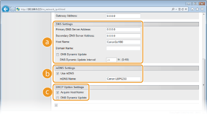
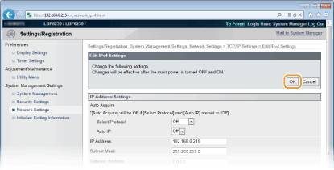
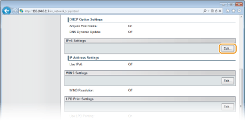
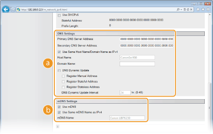
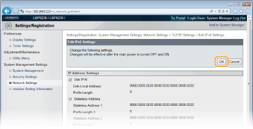

Configuring DNS
DNS (Domain Name System) provides a service for name resolution that associates a host (or domain) name with an IP address. Configure the DNS, mDNS, or DHCP option settings as necessary according to your network. Note that the procedures for configuring DNS are different for IPv4 and IPv6.

1
Start the Remote UI and log on in System Manager Mode. Starting the Remote UI
2
Click [Settings/Registration].

3
Click [Network Settings]  [TCP/IP Settings].
[TCP/IP Settings].

4
Configure the DNS settings.
 Configuring IPv4 DNS settings
Configuring IPv4 DNS settings
|
1
|
Click [Edit] in [IPv4 Settings].
 |
|
2
|
Configure the IPv4 DNS settings.
  [DNS Settings] [DNS Settings][Primary DNS Server Address]
Enter the IP address of the DNS server. [Secondary DNS Server Address]
When there is a secondary DNS server, enter its IP address. [Host Name]
Enter up to 47 alphanumeric characters for the host name of the machine that is to be registered with the DNS server. [Domain Name]
Enter up to 47 alphanumeric characters for the name of the domain the machine belongs to (such as "example.com"). [DNS Dynamic Update]
Select the check box to automatically update the DNS records whenever the association between the machine's IP address and its host name changes (for example, in a DHCP environment). To specify the interval between updates, enter the time in hours in the [DNS Dynamic Update Interval] text box. Clear the check box if you do not want to use dynamic updating.  [mDNS Settings] [mDNS Settings][Use mDNS]
Adopted by services such as Bonjour, mDNS (multicast DNS) is a protocol for associating a host name with an IP address without using DNS. Select the check box to enable mDNS and enter the mDNS name in the [mDNS Name] text box. Clear the check box if you do not want to use mDNS.  [DHCP Option Settings] [DHCP Option Settings][Acquire Host Name]
Select the check box to enable Option 12 to obtain the host name from the DHCP server. Clear the check box if you do not want to use this function. [DNS Dynamic Update]
Select the check box to enable Option 81 to dynamically update the DNS records through the DHCP server instead of through this machine. Clear the check box if you do not want to use this function. |
|
3
|
Click [OK].
 |
Configuring IPv6 DNS settings
|
1
|
Click [Edit] in [IPv6 Settings].
 |
|
2
|
Configure the IPv6 DNS settings.
The [Use IPv6] check box must be selected to configure the settings. Setting IPv6 Addresses
 [DNS Settings][Primary DNS Server Address]
Enter the IP address of the DNS server. Addresses that start with "ff" (multicast addresses) and the loopback address (::1) cannot be entered. [Secondary DNS Server Address]
When there is a secondary DNS server, enter its IP address. Addresses that start with "ff" (multicast addresses) and the loopback address (::1) cannot be entered. [Use Same Host Name/Domain Name as IPv4]
Select the check box to use the same settings as in IPv4. The host name and domain name used in IPv4 will be set automatically after the machine restarts. Clear the check box if you want to use different settings from IPv4. [Host Name]
Enter up to 47 alphanumeric characters for the host name of the machine that is to be registered with the DNS server. [Domain Name]
Enter up to 47 alphanumeric characters for the name of the domain the machine belongs to (such as "example.com"). [DNS Dynamic Update]
Select the check box to automatically update the DNS records whenever the association between the machine's IP address and its host name changes (for example, in a DHCP environment). To specify the addresses you want to register with the DNS server, select one or more of the check boxes for [Register Manual Address], [Register Stateful Address], and [Register Stateless Address]. To specify the interval between updates, enter the time in hours in the [DNS Dynamic Update Interval] text box. Clear the check box if you do not want to use dynamic updating. [mDNS Settings][Use mDNS]
Adopted by services such as Bonjour, mDNS (multicast DNS) is a protocol for associating a host name with an IP address without using DNS. Select the check box to enable mDNS. Clear the check box if you do not want to use mDNS. [Use Same mDNS Name as IPv4]
Select the check box to use the same settings as in IPv4. The mDNS name used in IPv4 will be set automatically after the machine restarts. Clear the check box and enter a name in [mDNS Name] if you want to use different settings from IPv4. |
|
3
|
Click [OK].
 |
5
Restart the machine.
Turn OFF the machine, wait for at least 10 seconds, and turn it back ON.